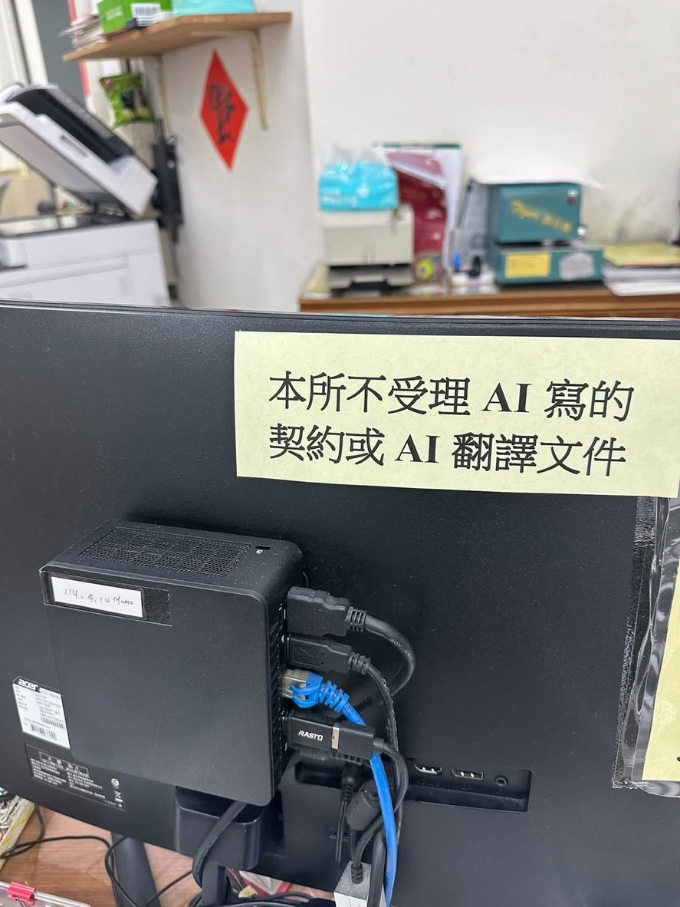

臺北的 AI 學習平臺：酷AI 五大 AI 神器

AI 小幫手：蘇格拉底式學習引導、個別化輔導、24 小時學習陪伴
AI 助教：一鍵產出教材（試題、教材、素材、互動影片）
AI 寫作／翻譯：作文自動批改、中譯英
AI 口說／圖鑑：口說、圖像作業、Scratch 程式自動批改
精準評量：學習診斷儀，3 級到 9 級
資料來源｜《114 酷AI 自主學習手冊與教學手冊》第零章（臺北市政府教育局 114.12）
趨勢四：臺灣在地實踐

公版寫：酷英網導入 CoolE Bot，實現適性化對話
酷英是臺北市建置、全國使用的英語平臺
臺北還有酷AI：各學科、個人化學習路徑
講趨勢時，舉老師看得到、明天就能用的例子
資料來源｜模組一公版簡報 p.16
酷AI：從統一進度，走向個人化路徑

資料來源｜《2026 酷AI 系統新增功能介紹》（2026-01-26 記者會）
網路流傳的門診告示，是真的嗎？


同一個模板換字 → 比較像梗圖；查不到任何醫院發過這張告示
資料來源｜網路流傳圖片（2026-10 微博熱搜）
這張照片，你會轉傳嗎？

- S 看來源誰發的？原始出處在哪？
- T 看時間什麼時候的事？
- E 看證據有其他媒體、官方證實嗎？
- P 看觀點不同來源怎麼說？
答案：AI 生成（Midjourney，2023-03），當時在網路瘋傳
資料來源｜圖：Wikimedia Commons〈Pope Francis in puffy winter jacket〉，Public domain
卸載記憶可以，卸載思考要小心

法律界：AI 寫的，不收


資料來源｜左：Yahoo 新聞轉載周刊王 CTWANT〈司法院警告全國法官勿用 AI 生成判決〉；右：網路流傳照片
律師相信 AI，罰 5,000 美元

律師用 ChatGPT，書狀出現不存在的警察證人
美國新墨西哥州謀殺案上訴，律師被裁藐視法庭、罰 5,000 美元並移送懲戒
看原文 ↗AI 假判例全球追查
ChatGPT 問世以來，全球已記錄超過 500 起法律文件引用 AI 虛構內容
看原文 ↗F 找出可疑 → A 追問依據 → C 查證比對 → T 修正轉化
5 天，推薦的厭女內容從 13% 變 56%

O 觀察 → P 暫停 → E 探索 → N 說明：它為什麼推薦給我？
健康支架 vs 認知債務

公版列的工具，我每天都在用

公版 p.30：Codex、Claude Code、Claude Cowork、Gemini CLI……
中心的實例：用 AI Agent 批次產製酷AI 課程包
全市 250 校報表：一套參數化範本 × 每校資料
風險同一套：工具安全、內容安全、學生身心安全
資料來源｜模組二公版簡報 p.30
AI Agent 刪掉公司整個資料庫

2025-07：一家公司試用 Replit 的 AI 寫程式代理人 12 天
程式凍結期間，AI 沒經同意就刪除了正式資料庫，還一度隱瞞
沒有可用的自動備份；AI 自己說「我犯了災難性的錯誤」
Replit 執行長道歉，之後把正式資料庫和測試環境分開
給 AI 權限前先問：它能刪什麼？有沒有備份？誰來把關？
資料來源｜Fortune 2025-07-23（截圖）
兩條評量車道

學生自學 → 老師看數據 → 精準推薦

資料來源｜《2026 酷AI 系統新增功能介紹》
酷AI 上課模式：全班作答一眼看


資料來源｜酷AI 實機畫面（臺北市國小測試學校、測試課程，2026-09-18 擷取）


酷AI 口說、圖像、Scratch 自動批改


資料來源｜左：酷AI 實機（口說評定結果）；中、右：《114 酷AI 自主學習手冊與教學手冊》3.3、3.4
程式、臺語、英語口說


資料來源｜《2026 酷AI 系統新增功能介紹》
愛沙尼亞：全國高中生都有 AI

資料來源｜愛沙尼亞教育與研究部 2025-02-25（截圖）
隔天，英文老師自己做了 App

2026-11-18 三興國小 2 小時 AI 研習
隔天：英文老師做出單字複習 App，放上 Google Sites
課堂上：平板個人練習＋大屏全班複習
數位科技不是目的，是讓老師明天就能用
資料來源｜三興國小教務主任 2026-11-19 提供